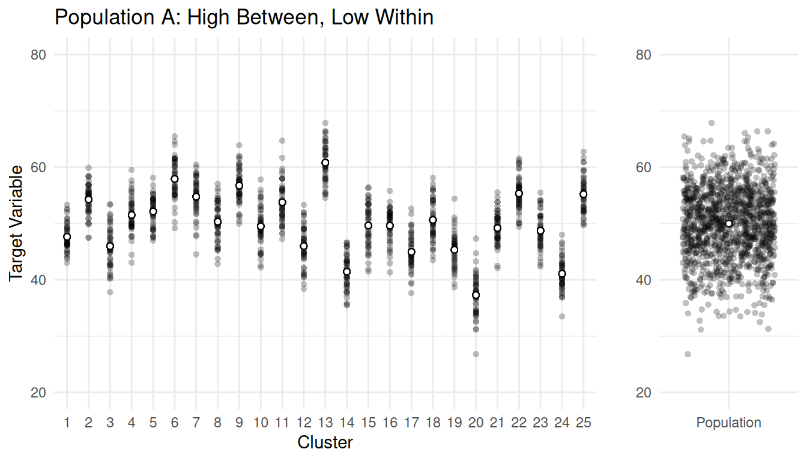
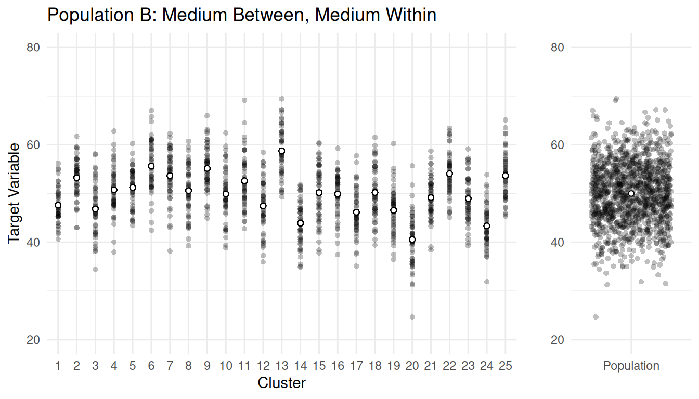
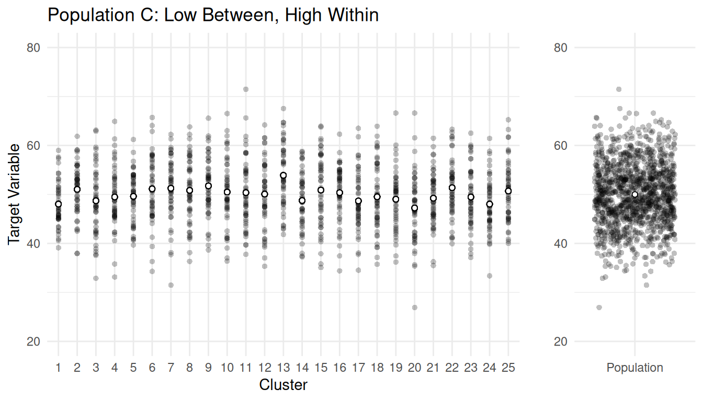
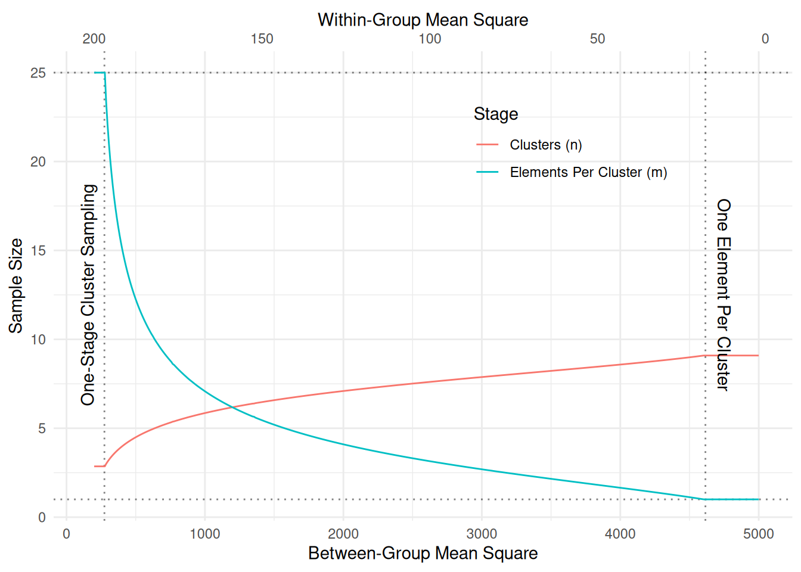
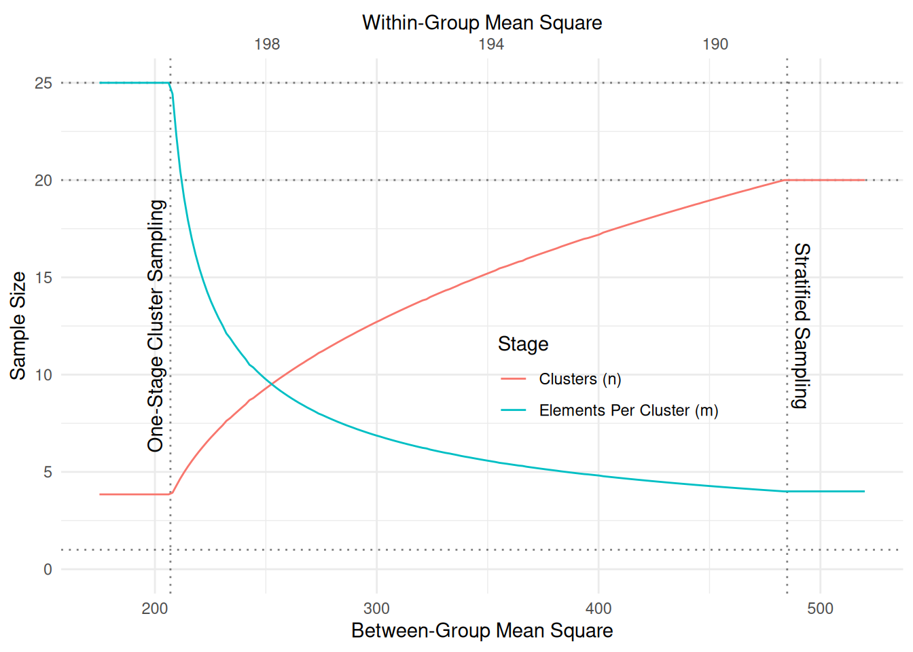

You can also download a PDF copy of this lecture.
One of the advantages of two-stage cluster sampling over one-stage cluster sampling is that we have more control over the cost and precision (in terms of the variance of an estimator) of the survey. This is because there are two stages of sampling, and thus two sample size decisions.
Assume a simple case where we have the following.
To simplify notation, let \(\bar{M} = M/N\) be the number of elements per cluster, and let \(m\) denote the number of elements sampled from each cluster. In this case the unbiased and ratio estimators are the same. Without loss of generality we will consider \(\hat\mu\).
The variance of \(\hat\mu\) can be written as \[ V(\hat\mu) = \left(1 - \frac{n}{N}\right)\frac{\sigma_b^2}{n\bar{M}} + \left(1 - \frac{m}{\bar{M}}\right)\frac{\sigma^2_w}{nm}, \] where \(\sigma_b^2\) and \(\sigma_w^2\) are the mean squares between-groups and within-groups, respectively, defined as \[ \sigma_b^2 = \bar{M}\frac{\sum_{i=1}^N(\mu_i - \mu)^2}{N-1}, \ \ \ \sigma_w^2 = \frac{1}{N}\sum_{i=1}^N \sigma_i^2, \] where \(\mu_i\) and \(\sigma_i^2\) are the mean and variances of the target variable for all the elements in the \(i\)-th cluster.
Example: Consider populations with \(M\) = 1250 elements in \(N\) = 25 clusters, each of size \(\bar{M}\) = 50.



The mean squares for the three populations are given below.| Population | \(\sigma_b^2\) | \(\sigma_w^2\) |
|---|---|---|
| A | 1551.41 | 10.39 |
| B | 873.23 | 23.68 |
| C | 103.07 | 38.76 |
Assume that the total cost of the survey can be computed as \[ C = nc_1 + nmc_2, \] where \(c_1\) is the cost-per-cluster and \(c_2\) is the cost-per-element. Minimizing cost for a fixed variance or bound, or minimizing the variance or bound for a fixed cost yields \[ m_{\text{opt}} = \sqrt{\frac{\bar{M}\sigma_w^2}{\sigma_b^2 - \sigma_w^2} \times \frac{c_1}{c_2}}. \] Note: We must have \(1 \le m \le \bar{M}\), and \(m_{\text{opt}}\) will not necessarily respect this constraint. Also \(m_{\text{opt}}\) isn’t defined if \(\sigma_b^2 < \sigma_w^2\).
The sample size for the number of clusters (\(n\)) to minimize the variance for a fixed cost is \[ n_{\text{opt}} = \frac{C}{c_1 + c_2m_{\text{opt}}}. \] Note: Clearly we must have \(1 \le n \le N\).
We can encounter various “limiting cases” when solving for \(m_{\text{opt}}\) and \(n_{\text{opt}}\).
| Population | \(\sigma_b^2\) | \(\sigma_w^2\) | \(m_{\text{opt}}\) | \(n_{\text{opt}}\) |
|---|---|---|---|---|
| A | 1551.41 | 10.39 | 1.836067 | 8.448752 |
| B | 873.23 | 23.68 | 3.733201 | 7.281624 |
| C | 103.07 | 38.76 | 17.359517 | 3.655035 |
Notice what happens as \(m_{\text{opt}}\) and \(n_{\text{opt}}\) as \(\sigma_b^2\) increases, and notice what happens to \(m_{\text{opt}}\) and \(n_{\text{opt}}\) as \(\sigma_w^2\) increases.
Clearly the solution is approximate — we would need to round the sample sizes.
How do we get \(\sigma_b^2\) and \(\sigma_w^2\) in practice?
Example: The following plot shows \(m_{\text{opt}}\) and \(n_{\text{opt}}\) as a function of the between-group and within-group mean squares for a population of \(N\) = 100 clusters with \(\bar{M}\) = 25 elements in each cluster. The costs are \(c_1\) = 10 and \(c_2\) = 1. The fixed total cost is \(C\) = 100. 
Example: The following plot shows \(m_{\text{opt}}\) and \(n_{\text{opt}}\) as a function of the between-group and within-group mean squares for a population of now \(N\) = 20 clusters, with the cost-per-cluster reduced to \(c_1\) = 1.

We can also solve this problem numerically. Here is the numerical solution to the first example above.
library(Rsolnp)
# Function to compute the variance of the estimator.
vf <- function(x, msb, msw, N, Mbar, c1, c2) {
m <- x[1]
n <- x[2]
return((1 - n/N) * msb / (n * Mbar) + (1 - m/Mbar) * msw/(n*m))
}
# Function to compute the cost of the survey.
cf <- function(x, msb, msw, N, Mbar, c1, c2) {
m <- x[1]
n <- x[2]
return(n*c1 + n*m*c2)
}
# Find n and m to minimize the variance subject to the
# constraint that the cost must equal 100.
tmp <- solnp(pars = c(5,5), fun = vf, eqfun = cf, eqB = 100,
N = 25, Mbar = 50, msb = 1551.41, msw = 10.39, c1 = 10, c2 = 1, LB = c(1,1), UB = c(50,25))
Iter: 1 fn: 3.4968 Pars: 3.71283 7.09572
Iter: 2 fn: 3.1969 Pars: 2.72390 7.80416
Iter: 3 fn: 3.1021 Pars: 2.17386 8.19659
Iter: 4 fn: 3.0797 Pars: 1.90797 8.39335
Iter: 5 fn: 3.0767 Pars: 1.84024 8.44547
Iter: 6 fn: 3.0766 Pars: 1.83610 8.44873
Iter: 7 fn: 3.0766 Pars: 1.83607 8.44875
Iter: 8 fn: 3.0766 Pars: 1.83607 8.44875
solnp--> Completed in 8 iterationstmp$pars[1] 1.836067 8.448752round(tmp$pars)[1] 2 8A multi-stage cluster sampling design is a natural extension of a two-stage cluster sampling design. A \(k\)-stage cluster sampling design where \(k\) \(\ge\) 2 can be designed by applying clusters sampling designs recursively.
A three-stage cluster sampling design can be described as follows.
Multi-stage cluster sampling designs are useful when elements are formed into groups hierarchically. Here are some examples of the three levels of sampling units in three-stage cluster sampling designs.
| primary | secondary | tertiary | Target Variable |
|---|---|---|---|
| pallet | box | widget | weight |
| neighborhood | block | household | income |
| county | farm | field | acres of wheat |
| school | classroom | student | test score |
| day | hour | minute | number of fish |
| plot | sub-plot | tree | volume |
In principle, any probability sampling design can be used at each stage. But often only the first stage uses a design other than SRS (e.g., PPS, stratified random sampling).